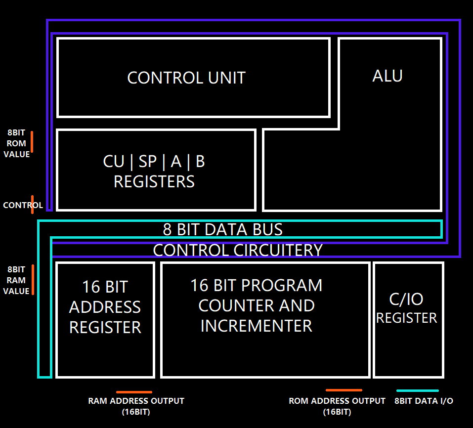

The really shitty vex8 processor
This is actually my very first processor, i blame Ben Eater, JDH and pretty much everyone who made a processor on Youtube for sending me down this rabbit hole.
| Table of content |
|---|
| 1. How it started |
| 2. Overview of the processor |
| 3. The instruction set |
| 4. Thoughts and downloads |
How it started
The very thing that made me do this CPU was the Sebastian Lague’s Digital Logic Sim where he explained how simple logic worked, one thing led to another and i was downloading Logisim to try to do something myself. I first made a simple ALU, then some registers and started to have something that looked more and more like a processor.
The problem with this is that the bloody thing is barely holding itself together, fixing bugs took probably longer than making the thing itself.
Overview
Here’s a Diagram of the processors’s architecture. It is a 8bit processor with a 16bit address bus to achieve a whopping 65 kilobytes of memory ( or 216 bytes of memory ), as we’ll see later the way control signals are transmited across the CPU is kind of ugly, it’s probably one of the worst part of this processor.
So, there are some quirks with this processor, the two main are:
- There is no way to do an operation with an immediate operand like you would do with an x86 based processor for exemple
add eax, 32, instead the CPU loads the byte of data into the CU register and then it needs to be moved to another register to do anything useful with the data. The way it’s done is kind of ugly and use a lot of storage space on the rom chip (we need at least 2 extra bytes to load a single piece of data from the rom) but it’s the easiest way i could integrate it in the design. - Modifying or reading the program counter PC can only be done via the RAM Address register AD, i probably could have implemented reading from the program counter directly but at the time i just wanted to finish the damn processor. I had grown really tired of fixing bugs and seeing how the thing barely worked i didn’t want to touch it more.
Inputs and outputs are also done through the C register, the clock signal and output signal are also provided with the I/O so it’s actually a 8 data bits + 2 control bits I/O
Instruction set
The instruction set is divided into 4 categories:
The 0 instructions
They allow the programmer to make the data of a register available on the bus, it is “sticky” so for exemple, when doing operations like put A register on bus the data of A will be on the bus until a new data is selected to put on the bus
Here are the instructions, note that when i’m saying “high” or “low” i am referring to the bits 15 to 8 and 7 to 0 of a 16 bit data:
| Hex Code | Instruction | Hex Code | Instruction |
|---|---|---|---|
| 0x00 | A->BUS | 0x07 | AD HIGH->BUS |
| 0x02 | B->BUS | 0x0A | RAM->BUS |
| 0x04 | C->BUS | 0x0B | ALU->BUS |
| 0x05 | SP->BUS | 0x0C | LEFT SHIFTER->BUS |
| 0x06 | AD LOW->BUS | 0x0D | RIGHT SHIFTER->BUS |
| / | / | 0x0E | CU->BUS |
As you can see the instructions covers everything that can store data on the CPU. We’ll get into how the ALU works later on but the result of the wanted operation between A and B is always available and ready to go on the bus at all time
The 2 instructions
Those instructions are responsible for controlling the ALU and everything around it they’re also sticky so that so selected operation stays selected until another one is, it helps improving performance of certain type of repetitive operations.
| Hex Code | Instruction | Hex Code | Instruction |
|---|---|---|---|
| 0x20 | ADD | 0x28 | LEFT BIT ROTATION |
| 0x21 | NOT | 0x2A | RIGHT BIT ROTATTION |
| 0x22 | AND | 0x2F | SUB WITH CARRY |
| 0x23 | OR | / | / |
| 0x24 | ADD CARRY | / | / |
| 0x25 | SUB | / | / |
Almost all of those operations will be able to output from the ALU except for the rotation and shift operations which output from LR or RR (Instructions 0x0C or 0x0D). To output a rotation result to the bus you would select bit rotation with 0x28 or 0x2A then output to the bus from a bit shifter by using 0x0C or 0x0D
The 1 Instructions
We’re now looking at single use instructions that don’t stick like the two categories above, those are used to move data from the bus to registers and move data around registers.
| Hex Code | Instruction | Hex Code | Instruction |
|---|---|---|---|
| 0x10 | A<-BUS | 0x18 | / |
| 0x11 | B<-BUS | 0x19 | RAM<-BUS |
| 0x12 | C<-BUS | 0x1A | PC->AD |
| 0x13 | SP<-BUS | 0x1B | IO PORT->C |
| 0x14 | AD LOW<-BUS | 0x1C | C->IO PORT |
| 0x15 | AD HIGH<-BUS | 0x1F | JUMP |
The JUMP Instruction does the AD->PC operation, it copies the 16bit address of the AD register to PC. There’s not much to say as the instructions here are pretty self explanatory
The F instructions
Those ones are very important, they allow conditional jumps with other various things like loading data from the ROM to the CU register.
| Hex Code | Instruction | Hex Code | Instruction |
|---|---|---|---|
| 0xF1 | JUMPZ | 0xF8 | RSTSP |
| 0xF2 | JUMPN | 0xF9 | RSTAD |
| 0xF3 | JUMPC | 0xFA | RSTPC |
| 0xF5 | RSTA | 0xFB | ROM->CU |
| 0xF6 | RSTB | 0xFC | HALT |
| 0xF7 | RSTC | 0xFD | NOOP |
The JUMPZ, JUMPN, JUMPC will perform the AD->PC operation if the result from the selected ALU operation (see 2 instructions) is, strictly zero for JUMPZ, if the MSB is equal to 1 for JUMPN, if the carry bit is true for JUMPC. Those instructions do not need the ALU->BUS instruction to work.
Instructions RST- are used to reset the register to their original value of 0. Using RSTPC will return the program counter to 0 and effectively restarts the program.
The next instruction ROM->CU loads the byte immediately after the instruction, for example, to load the byte 0xAA, the binary value needs to be 0xFB 0xAA. After that the data can be accessed from the CU register like any other one.
All those instructions take exactly one clock cycle except the ROM->CU instruction which takes one clock cycle to fetch the instruction and another one to fetch the data to load and storing it in CU.
This instruction set was kind of bad to be honest, it wasn’t really planned and is just the result of whatever bad decision i made during the designing process.
Thoughts
Even is this processor is, in retrospective, really bad, it allowed me to learn the basics of CPU architecture and grant me the ability to learn more complex concepts for my future designs. I also wrote a very basic assembler to go with the cpu, it’s kind of bad but to be honest it doesn’t need a complex assembler or anything like that.
Files
Archive file with the Logisim file, a full diagram of the cpu, an assembler, exemple helloworld bin file and uncompiled branching test. Please follow microcode.txt to use the correct assembler instructions. READ THE README